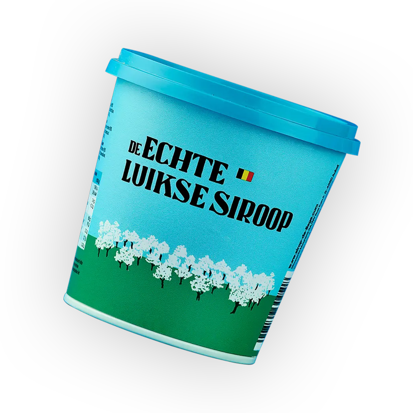
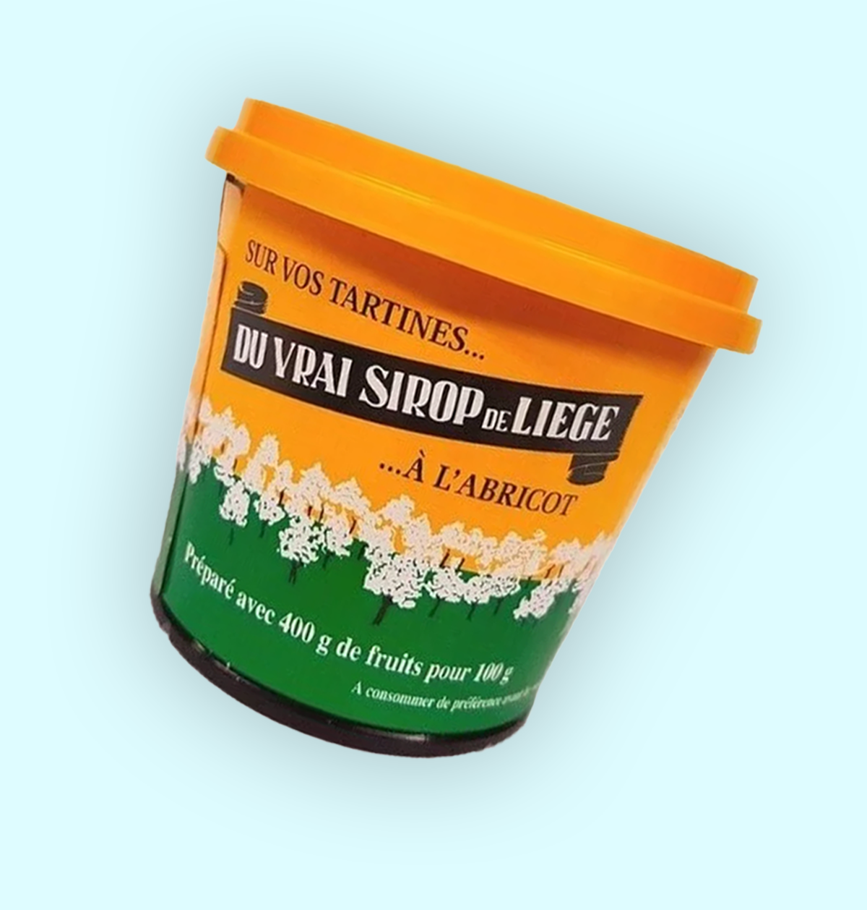
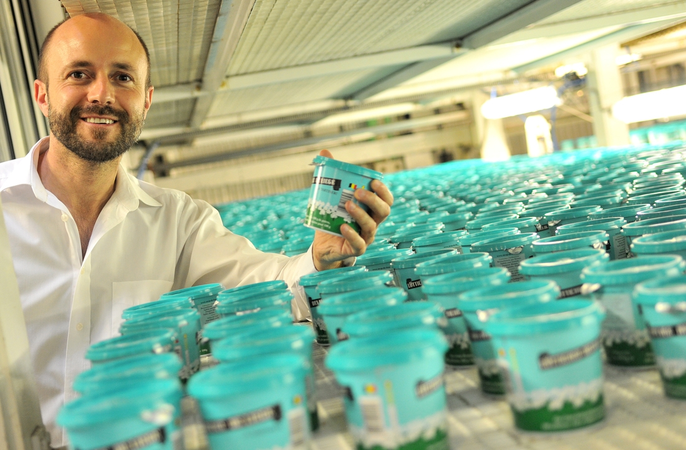
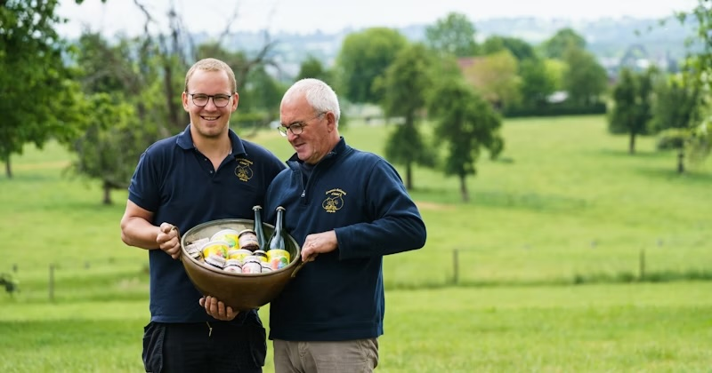

Luikse siroop is een authentieke Belgische specialiteit, gemaakt van lokaal geteelde appels en peren. Zonder toegevoegde suikers, puur en ambachtelijk, wordt het volgens eeuwenoude recepten langzaam gekookt tot een smeuïge siroop met een rijke, zoetzure smaak. Ideaal voor op brood, bij kaas, of als geheime toets in gerechten. Een product vol traditie en vakmanschap!

De echte Luikse siroop wordt gemaakt door vakmensen die al generaties lang trouw blijven aan traditionele recepten. Met lokaal geteelde appels en peren, zonder toegevoegde suikers, creëren producenten zoals Siroperie Meurens sinds 1902 een siroop met een unieke, pure smaak. Het geheim? Langzaam koken voor die authentieke zoetzure balans. Perfect voor op brood, bij kaas, of in gerechten: een product met passie en traditie!